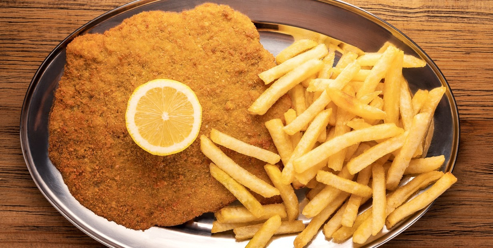

Home
Breaded Beef Cutlets with French Fries

Description
Crispy breaded beef cutlets fried to golden perfection, paired with crunchy, golden French fries. A classic, satisfying meal loved for its comforting flavors and textures.
Ingredients
- 4 thin beef cutlets (e.g. round or sirloin)
- 2 eggs
- 2 tablespoons milk
- 2 cups breadcrumbs
- 2 cloves garlic, minced (optional)
- Fresh parsley, chopped (optional)
- Salt and pepper
- Vegetable oil, for frying
- 4 large potatoes
Steps
- Prepare the Cutlets:
Season the beef cutlets on both sides with salt and black pepper.
- In a shallow bowl, beat the eggs with the milk. Add minced garlic and chopped parsley if desired for extra flavor.
- Place the breadcrumbs in another shallow dish.
- Dip each beef cutlet into the egg mixture, ensuring it’s fully coated, then press it into the breadcrumbs, covering it evenly on both sides. Set aside.
- Prepare the Fries:
Peel the potatoes and cut them into evenly sized sticks. Rinse under cold water, then pat dry thoroughly with a clean towel.
- Heat vegetable oil in a deep pan or fryer to 170-180°C (340-355°F). Fry the potatoes in batches until golden and crispy. Drain on paper towels and season with salt while still hot.
- In another skillet, heat enough oil to shallow-fry the milanesas. Cook the breaded cutlets for about 2-3 minutes per side, or until golden brown and cooked through. Drain on paper towels.
- Serve the milanesas hot alongside the freshly fried potatoes. Enjoy!